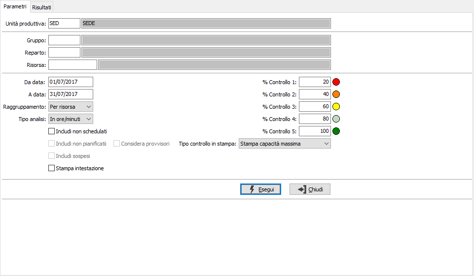
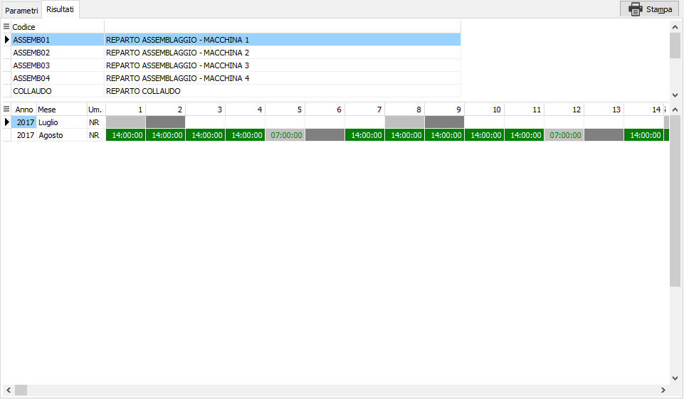
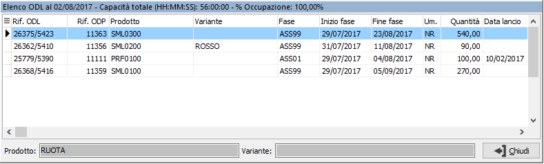

Analisi capacità risorse
La funzione consente di visualizzare l'occupazione (in tempo) di ogni singola risorsa, analizzando i dati derivanti dalla schedulazione (quindi a capacità finita); è possibile ottenere i dati per singola risorsa oppure aggregati per gruppo o per reparto.
Nella pagina dei parametri sono presenti i criteri di selezione per risorsa, reparto, o gruppo, periodo di date relative agli ODL schedulati; è possibile visualizzare il risultato in ore/minuti oppure a quantità ed includere anche ODL non schedulati, non pianificati ed addirittura ODL provvisori. Sono inoltre configurabili dei colori per mostrare l'occupazione delle risorse in modo evidente in relazione ad una percentuale.
Il parametro "Tipo controllo in stampa" consente di stampare la capacità massima o la percentuale di occupazione oppure nessun dato per ogni giorno.
Premendo il pulsante Esegui si avvia l'elaborazione che porterà alla pagina dei risultati.

La pagina dei Risultati presenta una griglia superiore che riporta, in base al tipo di analisi risorsa, reparto oppure gruppo; nella griglia inferiore in periodi, suddivisi per anno/mese, dove sono presenti i giorni con le relative quantità oppure i tempi a seconda del tipo analisi scelto; le caselle sono evidenziate con il colore relativo alla propria percentuale di occupazione.

Tramite il pulsante Stampa oppure il menù del tasto destro del mouse sulla griglia inferiore è possibile effettuare la stampa del singolo elemento o di tutta l'analisi; è possibile anche visualizzare il dettaglio degli ODL della casella su cui si è posizionati, anche con il doppio clic del mouse.
